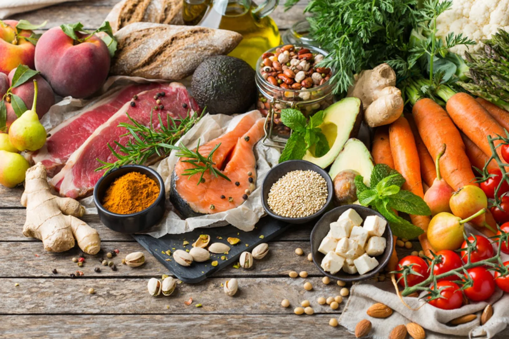

ALIMENTAÇÃO BALANCEADA
Praticamente todo mundo já entrou em alguma dieta radical que prometia reduzir o peso de forma drástica.
Da mesma forma, todos já deslizamos e comemos mal por um tempo. Ainda que esse tipo de coisa seja inevitável às vezes, essa não é a forma mais recomendada de se alimentar, nem o excesso e muito menos a falta. O que é realmente importante e que deve ser colocado em prática sempre é a alimentação balanceada.
Com ela, o corpo recebe todos os nutrientes que precisa, ao mesmo tempo em que o peso e a saúde são mantidos, sempre de uma maneira saudável. Por outro lado, apesar do tanto que ouvimos a respeito de alimentação balanceada, você já parou para pensar no que isso significa?
E, mais importante, sabe como ter uma alimentação balanceada?
